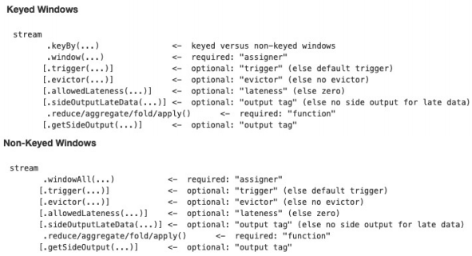
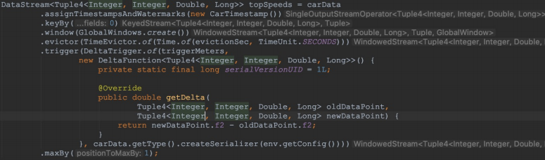
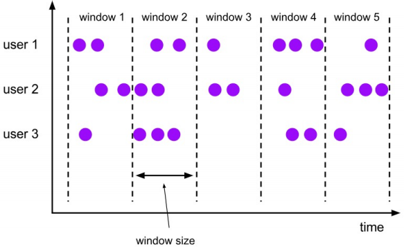
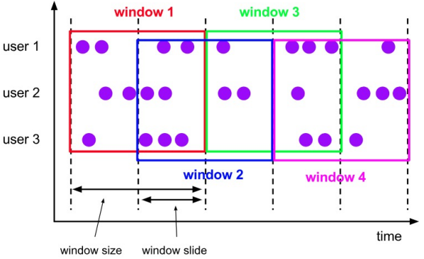
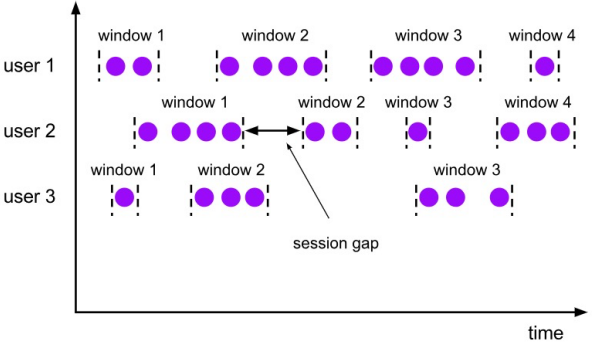
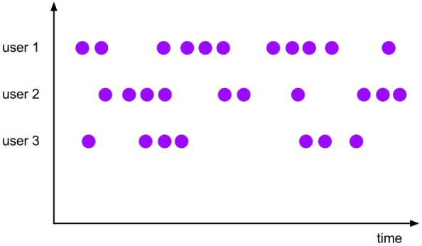
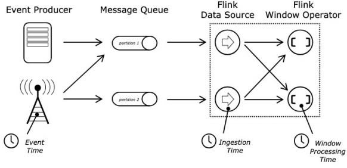
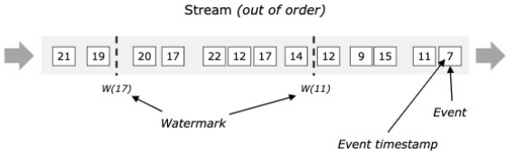
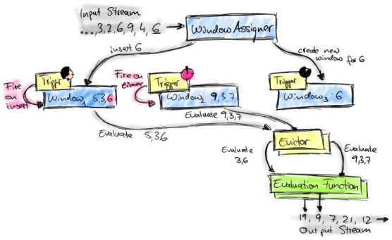

Window & Time
Apache Flink 是一个天然支持无限流数据处理的分布式计算框架，在 Flink 中 Window 可以将无限流切分成有限流，是处理有限流的核心组件，Flink 中 Window 可以是时间驱动的(Time Window)，也可以是数据驱动的(Count Window)。
Flink 中使用 Window 的两个示例：

1、Window API
Flink 代码实例：

其中，数据处理的流程为：先对每条数据进行时间抽取，然后 keyBy，接着一次调用 window、evictor、trigger 以及 maxBy。
1.1、WindowAssigner、Evictor 和 Trigger
1.1.1、Window
window() 接收一个 WindowAssigner 参数，WindowAssigner 负责将每条输入的数据分发到正确的 window 中(一条数据可能同时分发到多个 window 中)，Flink 提供了几种通用的 WindowAssigner：tumbling window(窗口间的元素无重复)，sliding window(窗口间的元素可能重复)，session window 以及 global window。如果需要定制数据分发策略，则可以实现一个 class，继承自 WindowAssigner。
Tumbling Window

Sliding Window

Session Window

Global Window

1.1.2、Evictor
evictor() 主要用于做一些数据的自定义操作，可以在执行用户代码之前，也可以在执行用户代码之后，更详细的描述可以参考 org.apache.flink.streaming.api.windowing.evictors.Evictor 的 evicBefore 和 evicAfter 两个方法。Flink 提供了如下三种通用的 evictor：
CountEvictor保留指定数量的元素DeltaEvictor通过执行用户给定的 DeltaFunction 以及预设的 threshold，判断是否删除一个元素。TimeEvictor设定一个阈值 interval，删除所有不在max_ts – interval范围内的元素，其中max_ts是窗口内时间戳的最大值。
evictor() 是可选的方法，如果用户不选择，则默认没有。
1.1.3、Trigger
trigger() 用来判断一个窗口是否需要被触发，每个 WindowAssigner 都自带一个默认的 trigger，如果默认的 trigger 不能满足需求，则可以自定义一个类，继承自 Trigger 即可， Trigger 接口方法的含义：
onElement()：每次往 window 增加一个元素的时候都会触发onEventTime()：当 event-time timer 被触发的时候会调用onProcessingTime()：当 processing-time timer 被触发的时候会调用onMerge()：对两个 trigger 的 state 进行 merge 操作clear()：window销毁的时候被调用
Trigger 接口的前三个方法会返回一个 TriggerResult，不同 TriggerResult 的含义：
- CONTINUE：不做任何事情
- FIRE：触发 window
- PURGE：清空整个 window 的元素并销毁窗口
- FIRE_AND_PURGE：触发窗口，然后销毁窗口
1.2、Time & Watermark
对于时间驱动的窗口，还有两个概念需要明白：Time 和 Watermark。
1.2.1、Time
分布式环境中 Time 是一个很重要的概念，在 Flink 中 Time 可以分为三种 Event-Time，Processing-Time 以及 Ingestion-Time，它们的关系如下图：

Event-Time 表示事件发生的时间，Processing-Time 则表示处理消息的时间（墙上时间），Ingestion-Time 表示进入到系统的时间。
在 Flink 中使用如下方式进行 Time 类型设置：
// 设置使用ProcessingTime
env.setStreamTimeCharacteristic(TimeCharacteristic.ProcessingTime);
1.2.2、Watermark
举例说明：某 App 会记录用户的所有点击行为，并回传日志(在网络不好的情况下，先保存在本地，延后回传)。A 用户在 11:02 对 App 进行操作，B 用户在 11:03 操作了 App，但是 A 用户的网络不太稳定，回传日志延迟了，导致在服务端先接受到 B 用户 11:03 的消息，然后接受到 A 用户 11:02 的消息，消息乱序了。
怎么保证基于 event-time 的窗口在销毁的时候，已经处理完了所有的数据呢？这就是 watermark 的功能所在。watermark 会携带一个单调递增的时间戳 t，watermark(t) 表示所有时间戳不大于 t 的数据都已经到来了，未来小于等于 t 的数据不会再来，因此可以放心地触发和销毁窗口了。下图中展示了一个乱序数据流中的 watermark 例子：

1.3、迟到数据
可以使用 watermark 应对乱序的数据，但是真实世界中没法得到一个完美的 watermark 数值 —— 无法精确获取，或者耗费太大。因此实际工作使用近似 watermark —— 生成 watermark(t) 之后，还有较小的概率接收到时间戳 t 之前的数据，在 Flink 中将这些数据定义为“late elements”, 在 window 中可以指定是允许延迟的最大时间(默认为 0)，可以使用下面的代码进行设置：
DataStream<T> input = ...;
input
.keyBy(<key selector>)
.window(<window assigner>)
.allowedLateness(<time>)
.<windowed transformation>(window function);
设置 allowedLateness 之后，迟来的数据同样可以触发窗口，进行输出。使用Flink 的 side output 机制，可以获取到这些迟到的数据，其方式如下：
final OutputTag<T> lateOutputTag = new OutputTag<T>("late-data"){};
DataStream<T> input = ...;
SingleOutputStreamOperator<T> result = input
.keyBy(<key selector>)
.window(<window assigner>)
.allowedLateness(<time>)
.<windowed transformation>(window function);
DataStream<T> lateStream = result.getSideOutput(lateOutputTag);
需要注意的是，设置了 allowedLateness 之后，迟到的数据也可能触发窗口，对于 Session window 来说，可能会对窗口进行合并，产生预期外的行为。
2、Window 内部实现
Window 的生命周期

每条数据过来之后，会由 WindowAssigner 分配到对应的 window，当 window 被触发之后，会交给 Evictor(如果没有设置 Evictor 则跳过)，然后处理 UserFunction，UserFunction 是用户编写的代码。
Flink 支持 Exactly Once 的处理语义，window 中的状态存储和普通的状态存储唯一的区别是，每个 window 属于不同的 namespace，非 window 场景下，都属于 VoidNamespace。最终由 State / Checkpoint 来保证数据的 Exactly Once 语义。
window 中的元素同样是通过 state 进行维护，然后由 Checkpoint 机制保证 Exactly Once 语义。